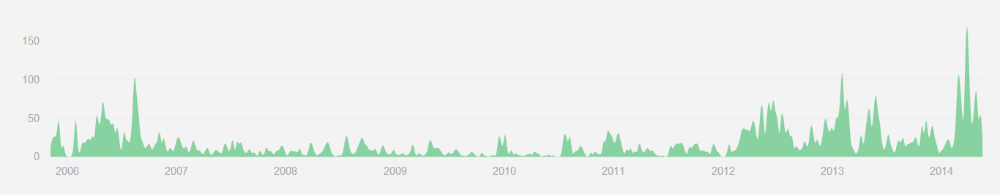

One year of Haxe
Nicolas Cannasse
@ncannasse
WWX 2014
One Year Of Haxe
- WWX 2013:
- 3.0 release
- Moved to github
- First Haxe Foundation partners
-
And then:
- ~2300 commits later...
- 3.1.0 in March
- Followed by 3.1.1
- and 3.1.2...
- and 3.1.3 (;_;)
- Now working on 3.2 !
3.1.x
- An update to 3.0 (no breaking change)
- Improves recent 3.0 features (pattern matching, abstracts)
- A bit of additional syntax
- Complete standard library
- various fixes and optimizations
Pattern matching
switch( stringValue ) {
case _.toLowerCase() => "foo": ...
case nospace(_) => x if( x != "" ): x;
}
function nospace(x:String) {
return ~/[ \t\r\n]+/g.replace(x,"");
}
- Allow to match
null value
Abstract enums
@:enum abstract A(String) {
var X = "X";
var Y = "Y";
var Z = "Z";
}
- Behave like an enum (type wise).
- Only a set of runtime values.
- No Enum reflection, no parameters
New Syntax
var f = (expression : Type);
// example
Reflect.setField(obj,"name",(foo() : String));
- Ensures that the expression is of the given type.
ECheckType in macros.
EnumValue.match
myEnum.match(pattern)
// example
if( macroExpr.match({ expr : EConst(CIdent(_)) }) ) ...
- shorter version of the switch for quick check.
- can't capture values.
Std.instance
function instance<T:{},S:T>( value : T, c : Class<S> ) : S;
// example
class A {}
class B extends A {}
class C {}
...
var a : A = new B();
Std.instance(a,B); // ok
Std.instance(a,C); // error
- optimized (no basic type support).
- to use for quick "downcast".
Compiler Cache Memory
- Report "Compiler caches takes too much memory"
- Add
--display memory to dump cache size and module references
- Notice (and fix) various module leaks (pointer kept to old version of modules)
- Report "One single module takes 2 GB of memory" (oops!)
- A LOT of
MyEnum.Value accesses
- Fixed it ! 200x memory reduction of this module
- Also speed up compilation !
Haxe 3.2 plans
Bytes API
- Goal of std : makes things easy, at low performance cost
- haxe.io.Bytes complete API : Int/UInt/8/16/24/32 accessors
- JS Typed Arrays API (slice view of underlying Bytes)
Unicode Support
- Haxe Strings are "array of chars"
- The definition of char is per-platform atm...
- C++/Neko : uint8 (ISO/ANSI/etc.)
- JS/Flash : uint16 (UCS2)
- Java : either UCS2 or UTF16 (JVM dependent)
- C# : UTF16
- ...it starts to be complicated
What is a String?
- At low level : a memory zone full of bytes
- The encoding is implicit !
- Storage of chars differ depending of encoding.
Various Encodings
| |
Char range |
Bytes/char |
Access |
| ANSI |
0x00-0x7F |
1 |
O(1) |
| ISO |
0x00-0xFF |
1 |
O(1) |
| UCS2 |
0x00-0xFFFF |
2 |
O(1) |
| UTF8 |
0x00-0x7FFFFFFF |
1-6 |
O(n) |
| UTF16 |
0x00-0xD7FF
+ 0xE000-0x10FFFF |
2 (+2) |
O(n)* |
(*) : unless we ignore surrogate pairs
UTF8 for file storage / HTML (superset of ANSI)
UTF-16 in details
- 0x00 - 0xD7FF : same as UCS2
- 0xE000 - 0xFFFF : same as UCS2
- 0x10000 - 0x10FFFF : surrogate pairs
- 0xD800 - 0xDFFF : invalid code points
- can still be produced by other encodings!
-
Still with us?
What to do?
- provide haxe.Ucs2/Utf8/Utf16
- ensure cross-platform conformity
- check performances
- most likely switch to UCS2 as default (3.4 ? 4.0 ?)
- tell us if you have better idea!
A few other things
- Allow
@:build in macros.
- Move SPOD out of
haxe.db (more on that later)
- Disable NekoVM bridge (better support for EReg/haxe.io.Process in macros)
- Work on Date (local/UTC time, etc.) : need your feedback!
- Global Optimization pass
Python target
Haxe Foundation
Who?
- Simon Krajewski
- Jason O'Neil
- the compiler team (Hugh, Cauê, Bruno, Franco, Heinz)
- /me
- all other contributors (Dan Korostelev, Andy Li, etc.)
What?
- maintain haxe compiler
- and standard library
- and haxelib

What?
- a LOT of unit tests for cross platform
- handling ~100 issues per month
- support for HF partners
- make sure things get resolved (OpenFL/NME)
- provides documentation... (ehm)
http://haxe.org
New haxe.org
- Haxe : the cross platform toolkit
- Haxe Manual
- complete language reference
- advanced technical information
- more to come:
- how to write cross platform code
- native interaction with the platform
- etc.
- Use Cases
- Games, Web, Mobile, Commandline, Cross platform, etc.
- links to popular libs/tools
- success stories
- Contribute!
Other HF Activities
- Sponsoring
- HIDE
- New Haxelib website
- UFront
- WWX
- anything that helps Haxe!
- Organize / Promote
- User groups
- Services
- Jobs
- Success stories
- Something else?
Thank you!
And don't forget...

Done with http://github.com/ncannasse/hxslides